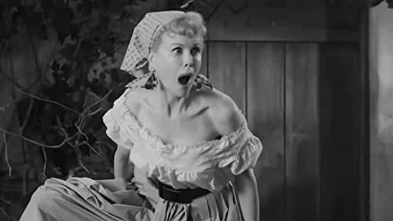
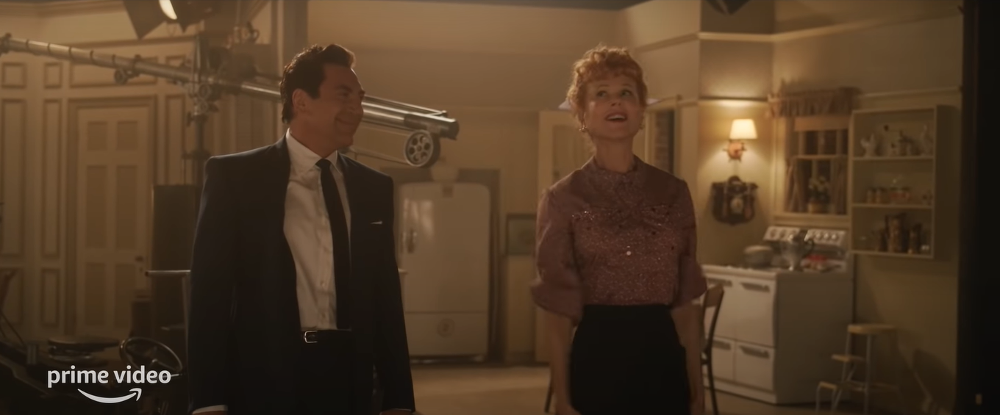
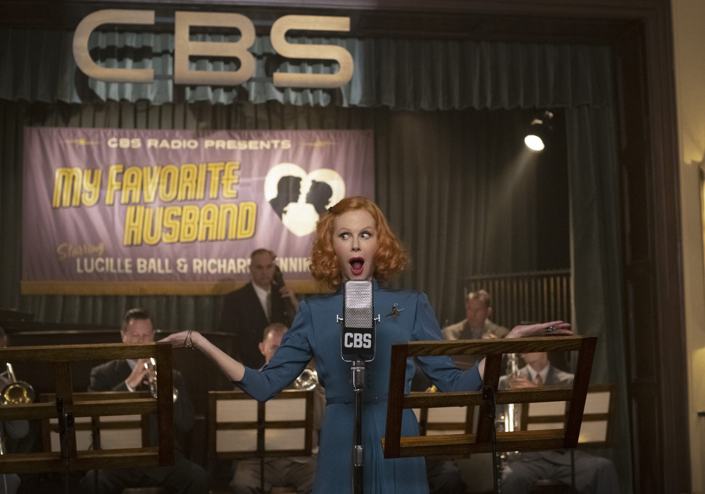

- Written and directed by Aaron Sorkin
- Starring
- Nicole Kidman
- Javier Bardem
- J K Simmons
- Nina Arianda
Let me commence by saying I am a huge fan of Nicole Kidman. Her body of work is immense and her diversity amazing. Scan through her career and you see she attempts something different at every turn. At the present I am fascinated by her work in the several TV series she has produced. Please see her as the Wellness Guru, in ‘9 Perfect Strangers’.
But still, she manages to appear in major motion pictures.
It took me some time to recover after seeing her as Virginia Woolfe in ‘The Hours’. What a performance, I was devastated.
Kidman has shown a versatility in her choice of roles that few actresses could match. She’s been good, very good and sometimes she’s been bad. For example, she should never have played a brain surgeon, that was just silly. But her good is very, very good indeed.
Now she attempts to become Lucille Ball. When I first heard of this, I thought, oh no, another brain surgeon role. She won’t be able to do this.
I should not have worried; she is too skilled an actress to let us down. You will be pleasantly surprised. Not only does she become Miss Ball, but she also inhabits her. I thought, she’ll be too tall for her, but that never becomes a problem. I thought she won’t have the comedic sense to portray her, but she has it in spades. [Witness the retelling of the famous scene of stomping the grapes – she is hilarious.]
 Nicole Kidman discovers DIY grape juice, circa 1956Nicole gives us the glamourous B movie star, the hard-nosed producer with a heart of steel and the warmth and vivacity of a great star.
The film telescopes a lot of years into one week of an ‘I Love Lucy’ episode of the early 1950s. For example, the film which causes Lucille to question her treatment by her studio, ‘The Big Street’, a Damon Runyan story, opposite Henry Fonda, was released in 1942, ten years before these proceedings take place. Fonda was a big star, who had just had an enormous hit with ‘The Grapes of Wrath’. Lucille did make another charming Damon Runyon film with Bob Hope in 1947, ‘Sorrowful Jones’, but I imagine a discussion of Bob Hope’s star power did not compare with Henry Fonda’s.
All this aside, the basis of the film is Lucille’s alleged membership of the communist party in 1937 and the attempts of her husband, Desi Arnaz, to protect his wife and the show from the House Un-American Activities Committee.
For me this is a side issue. The real film is the relationship of the two stars and their co-stars in the TV Show.
Javier Bardem, an excellent actor, brings everything to his Desi as could be wished. He is the Cuban bandleader. He sings his Cuban songs, he plays his bongos, he loves his wife, and he loves women, he has a different girl in his bed at every turn. Lucy knows this and realizes this is the price she must pay to keep a Cuban lover. Bardem is spot on.
 Bardem telling Kidman about why his role in 'Pirates of the Caribbean' was much more challenging than his role in 'No Country for Old Men'. Kidman prays for the sweet release of death.As the two co-stars of the TV show, William Frawley and Vivian Vance, we have J K Simmons and Nina Arianda. They disliked each other in real life and this is portrayed to perfection. They are both spot on, particularly, J K Simmons’ with his drinking habits.
The reconstructed comedy routines from the show are brilliantly executed and seem just like the real thing we witnessed on the TV screen back in the 50s.
However, the major thread running through the whole film is the strength of Lucille Ball as actor and producer. Her innate instinct for comedy and timing is unique and Kidman takes us inside the lady, and we feel her heart beat and her dramatic skill to ensure every scene works. She fights the director and the producers to get what, she knows, is the perfect scene.
She frustrates her producers as she works over and over a piece of timing until she knows she has it right. Luckily, she and Desi owned the project so she could indulge herself in this way.
Kidman brings everything to this role. It is a triumph.
 "Grumpy Old Man likes my movie?!?"[As a footnote it is worth looking at ‘The Big Street’ to see just how gorgeous Lucille Ball was at the time, the early 40s. It is said she never became a big movie star, but if you see her in this one, you’ll wonder why. Also, indulge yourself with a look at ‘The Long, Long, Trailer’. A film MGM made to cash in on their popularity in 1953. It’s pretty bad, but fun as an historical piece.]
Star Rating: 1.5/5 [Could this be Nicole’s second Oscar?] [Could this be Nicole’s second Oscar?]